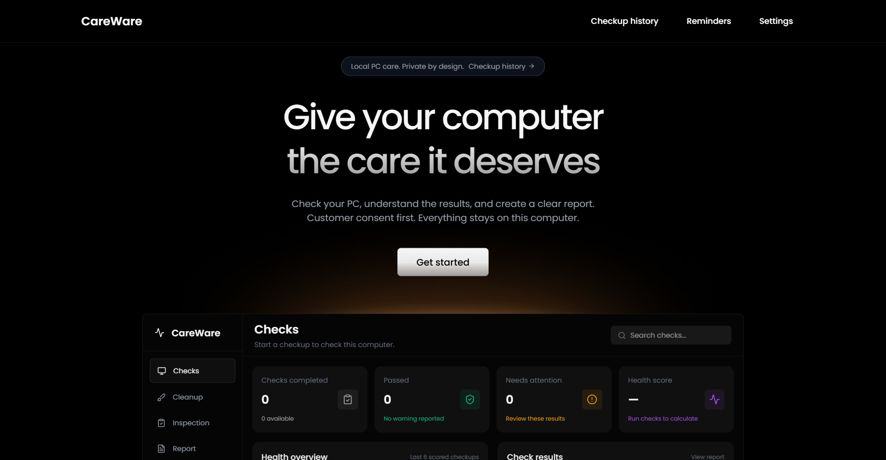

1
Start a private checkupReview the consent notice, identify the computer, and choose the checks you want to run.
Check your Windows PC, understand the results, and create a clear report—without needing to be a computer expert.

CareWare brings common Windows diagnostics into one focused desktop app and translates results into practical language.
Review the consent notice, identify the computer, and choose the checks you want to run.
See passed checks, items needing attention, problems, and unavailable readings without false green results.
Export PDF and JSON reports, compare checkups, or save the complete history as CSV.
WHY CAREWARE
PC health information should help people make decisions—not bury them in technical output.
CareWare is for people who want to check a desktop or laptop without navigating command-line tools or scattered system menus. It gives context while leaving repair decisions in the user’s hands.
Free Windows 10/11 installer. No separate Python or Node.js setup required.